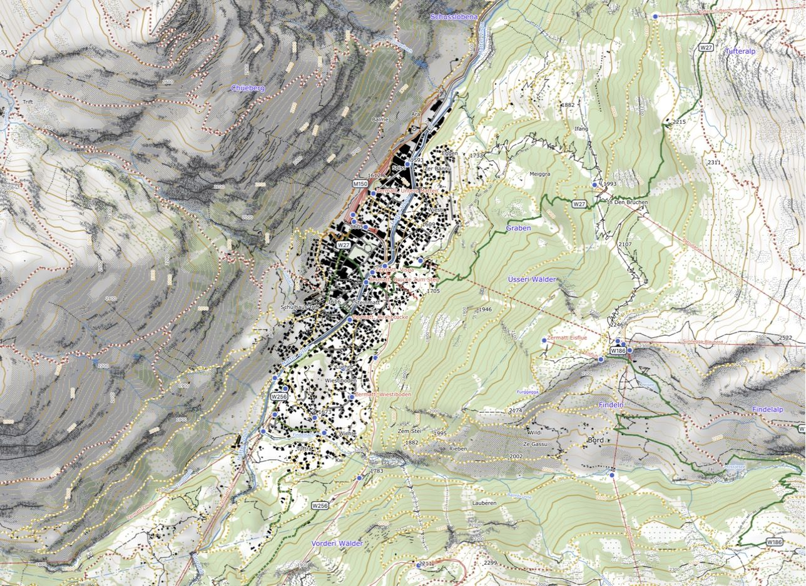
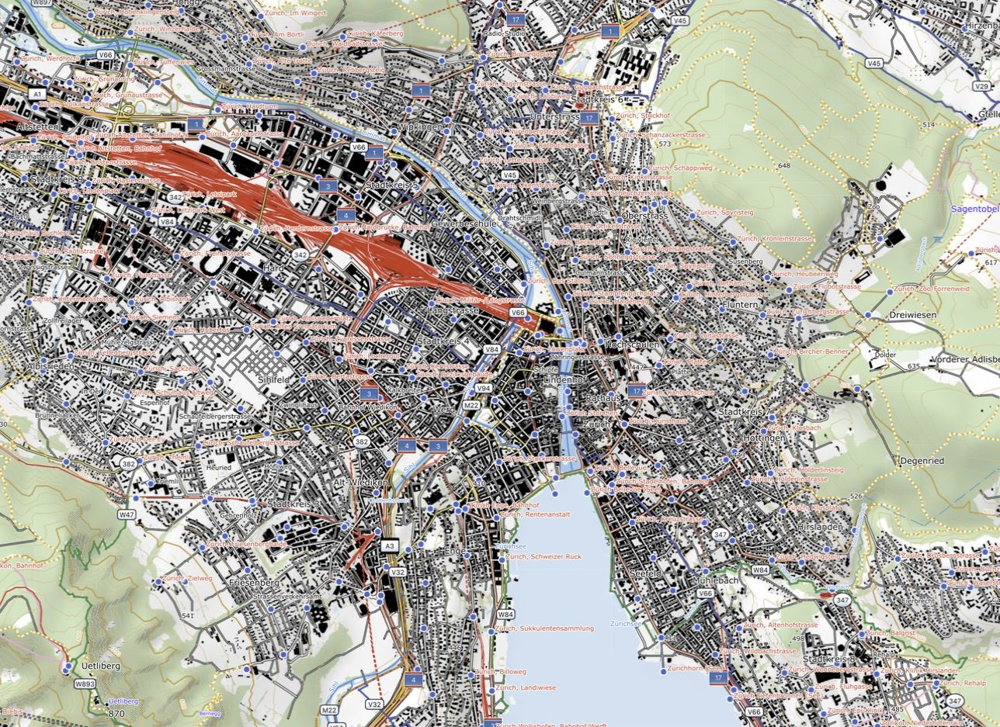
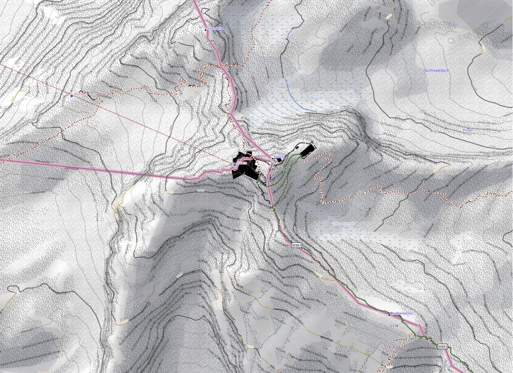
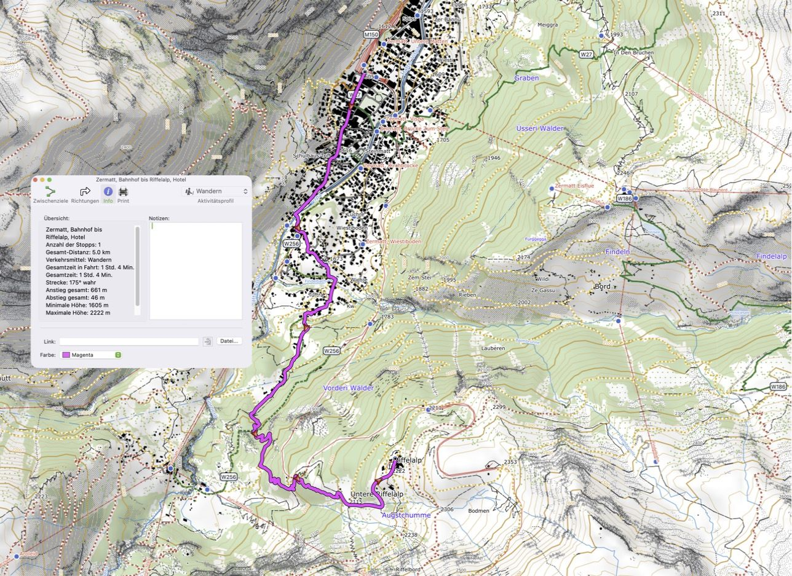
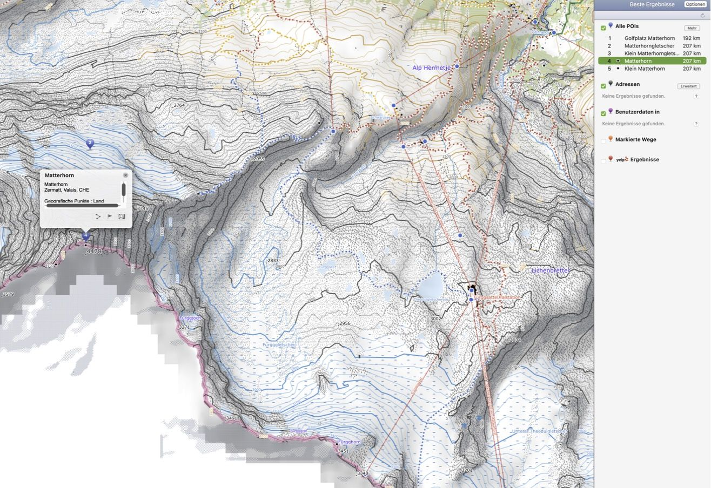
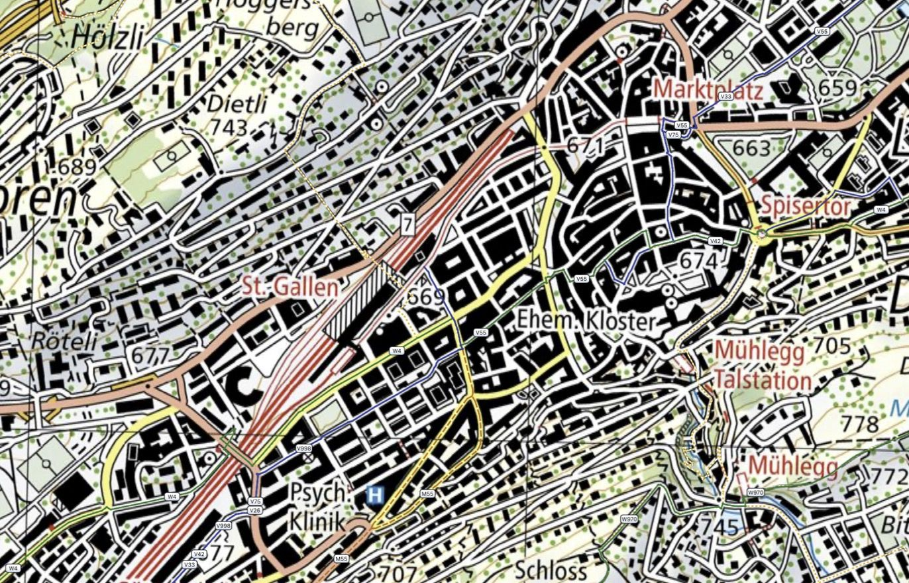
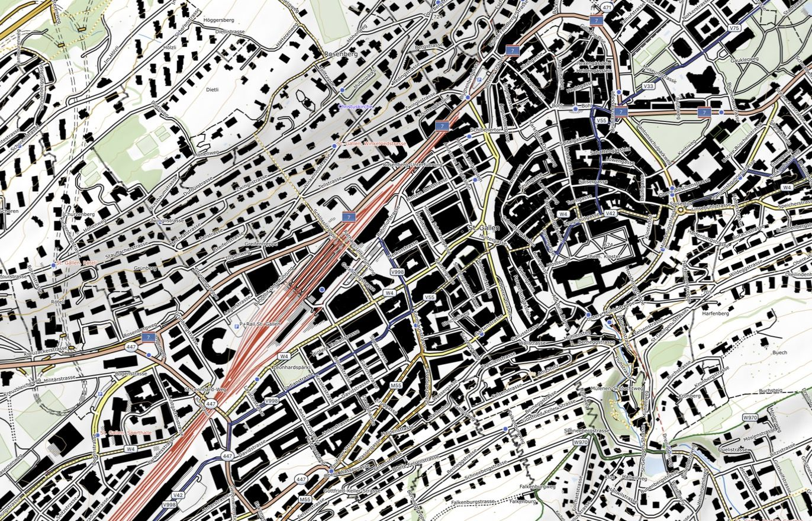

Garmin-Karte · Kostenlos · Routingfähig
Basierend auf der swisstopo‑Landeskarte – für dein Garmin
Kostenlose topografische Karte der Schweiz und Liechtensteins für Garmin GPSMAP, Montana, eTrex, epix, fēnix und andere1 sowie BaseCamp, auf Basis der offenen Daten von swisstopo, mit Wanderwegen, Höhenlinien, Adresssuche und Routing für Fuss und Velo.
1 Getestet bisher nur auf dem GPSMAP und in BaseCamp.
Downloads
Für den Anfang reicht die Vektorkarte. Die Pixelkarte zeigt das gewohnte Kartenbild und gibt es in drei Detailstufen.
Was die Karte kann
Gebaut aus den offenen Geodaten von swisstopo, für die Schweiz und Liechtenstein, im Stil der Landeskarte 1:25'000.
Im Stil der Landeskarte
Farben, Linien und Beschriftung im Stil der Landeskarte 1:25'000.
Routing
Routen zu Fuss und mit dem Velo, berechnet direkt auf deinem Garmin.
Wanderwege & Routen
Wanderwege nach Kategorie sowie Velo-, Mountainbike- und Skating-Routen von SchweizMobil.
Höhenlinien
Höhenlinien und Koten aus dem Höhenmodell swissALTI3D, als zuschaltbares Overlay.
Adresse & Ort finden
Suche nach Strasse und Hausnummer (Schweiz), Ortschaften, Gipfeln, Pässen und Bahnhöfen.
Kostenlos & aktuell
Kostenlos und ohne Konto. Jedes Release folgt den neuen Datenständen von swisstopo, und der Datenstand steht bei jedem Download.
So sieht sie aus
Ausschnitte aus BaseCamp. Tippe auf ein Bild für die grosse Ansicht.





Vektor- oder Pixelkarte?
Ziehe den Regler: links die schlanke Vektorkarte mit Routing, rechts die Pixelkarte 1:25'000. St. Gallen, gleicher Ausschnitt.


VektorkartePixelkarteIn drei Schritten auf dein Garmin
Für GPSMAP, Montana, eTrex, epix, fēnix und andere Garmin-Geräte mit Kartenunterstützung.
- Datei für dein Garmin herunterladenUnter Downloads die IMG-Datei der Vektorkarte speichern, für Wanderwege und Velorouten dazu das Routen-Overlay. Umbenennen ist nicht nötig.
- Dein Garmin anschliessenPer USB verbinden. Es erscheint als Laufwerk; am besten die microSD-Karte verwenden.
- In den Ordner
GarminkopierenDein Garmin auswerfen und neu starten. Unter Karteneinstellungen nur eine Hintergrundkarte aktivieren (Vektorkarte, Pixelkarte oder Luftbild) und dazu das Routen-Overlay. Sind mehrere Hintergrundkarten aktiv, zeichnet dein Garmin alle übereinander, und die Anzeige wird langsam.
- BaseCamp-Paket herunterladenUnter Downloads das BaseCamp-Paket (ZIP) wählen und entpacken.
- Kartenordner kopierenDen Ordner mit der Endung
.gmapkopieren: unter Windows nachC:\ProgramData\Garmin\Maps\, unter macOS nach~/Library/Application Support/Garmin/Maps/. - BaseCamp neu startenDie Karte erscheint danach unter „Karten“. Routen planen und an dein Garmin senden.
- Variante wählenPixelkarte oder Luftbild, dann die Variante je nach Speicher und Detailstufe. Ist eine Variante in Regionen aufgeteilt, nur die benötigten Regionen herunterladen.
- In den Ordner
GarminkopierenDie IMG-Datei(en) unverändert auf dein Garmin oder seine microSD-Karte kopieren. - EinblendenDein Garmin neu starten. Unter Karteneinstellungen die Pixelkarte oder das Luftbild aktivieren und die anderen Hintergrundkarten ausschalten. Das Routen-Overlay kann eingeschaltet bleiben.
Häufige Fragen
Ist das eine offizielle Karte von swisstopo oder Garmin?
Nein. Es ist ein unabhängiges Projekt, das die offenen Geodaten von swisstopo (OGD) und SchweizMobil (Open Data) im Garmin-Kartenformat (IMG) bereitstellt. Inoffizielle Umwandlung, nicht von swisstopo herausgegeben.
Hat das etwas mit Garmin TOPO Schweiz zu tun?
Nein. Diese Karte ist ein unabhängiges Projekt und hat nichts mit den kostenpflichtigen Karten von Garmin zu tun, etwa TOPO Schweiz v2 PRO. Sie ist kostenlos, und jedes Release nennt den Datenstand der verwendeten swisstopo-Daten.
Warum gibt es Helvetopo?
Die Geodaten von swisstopo sind offen und gratis. Deshalb machen wir daraus eine Karte für Garmin-Geräte und geben sie ebenfalls gratis weiter. Helvetopo nutzt den aktuellen Datenstand von swisstopo und nennt ihn bei jedem Release. Die Vektorkarte hat Strassennamen, Adresssuche und Routing für Fuss und Velo. Die Pixelkarte wechselt beim Zoomen auf den passenden Massstab, von der Detailkarte bis 1:1 Mio.
Wo ist der Haken? Gratis gibt es doch nichts.
Es gibt keinen Haken. Helvetopo verfolgt kein kommerzielles Interesse: keine Werbung, keine Tracker oder Analyse-Dienste, keine Cookies, kein Konto, keine Bezahlversion. Webserver und Download-Speicher protokollieren nur, was der Betrieb technisch braucht (Details in der Datenschutzerklärung). Das Projekt entsteht aus Freude an guten Karten und am Kartenwerk von swisstopo.
Brauche ich GitHub oder einen Dienst ausserhalb Europas?
Nein. Zum Herunterladen und Benutzen der Karten läuft alles auf Servern in Europa (Schweiz und EU): das Portal, die Downloads und die Dokumentation zu jedem Release. GitHub brauchst du nur, wenn du Helvetopo selbst bauen oder mitentwickeln willst. Dort liegt der Quellcode. Die Kartendateien liegen nie auf GitHub.
Ist Liechtenstein enthalten?
Ja. Die swisstopo-Daten decken auch Liechtenstein ab: Gelände, Strassen, Wege, Namen und Höhenlinien. Die Adresssuche gibt es jedoch nur für die Schweiz, weil das amtliche Gebäudeadressverzeichnis nur Schweizer Adressen enthält.
Welche Geräte werden unterstützt?
Getestet ist die Karte bisher nur auf dem GPSMAP und in BaseCamp. Montana, eTrex, epix, fēnix und andere Garmin-Geräte mit Kartenunterstützung lesen dasselbe IMG-Format und sollten ebenfalls funktionieren.
Was ist der Unterschied zwischen Vektor- und Pixelkarte?
Die Vektorkarte ist kompakt, durchsuchbar und routingfähig. Die Pixelkarte zeigt das Kartenbild der Landeskarte in mehreren Massstäben, je nach Variante ab 1:10'000, 1:25'000 oder 1:50'000 bis 1:1 Mio. Beim Zoomen wechselt sie automatisch auf den passenden Massstab. Routen kann sie nicht.
Wann zeigt mein Garmin welchen Massstab der Pixelkarte?
Jede Pixelkarte enthält mehrere Massstäbe. Beim Zoomen wechselt dein Garmin automatisch auf den passenden Massstab. Mit der Einstellung Kartendetail „Normal“ gilt ungefähr diese Zuordnung (Zoomanzeige am Garmin, gemessen am GPSMAP 67):
| Zoom | 10-1000 | 25-1000 | 50-1000 |
|---|---|---|---|
| bis ca. 120 m | 1:10'000 | 1:25'000 | 1:50'000 |
| ca. 200–300 m | 1:25'000 | 1:25'000 | 1:50'000 |
| ca. 500–800 m | 1:50'000 | 1:50'000 | 1:50'000 |
| ca. 1,2 km | 1:100'000 | 1:100'000 | 1:100'000 |
| ca. 2–3 km | 1:200'000 | 1:200'000 | 1:200'000 |
| ca. 5 km | 1:500'000 | 1:500'000 | 1:500'000 |
| ca. 8 km | 1:1 Mio. | 1:1 Mio. | 1:1 Mio. |
Unterhalb von ca. 120 m kennt Garmin keine weiteren Stufen. Beim weiteren Hineinzoomen vergrössert dein Garmin nur das Bild. Deshalb erscheint 1:10'000 erst bei sehr starkem Zoom.
Die Einstellung Kartendetail verschiebt die Wechsel um eine Stufe:
- „Weniger“: Dein Garmin wechselt früher auf den gröberen Massstab. Das hilft, wenn dir die Karte zu klein oder zu fein ist.
- „Mehr“: Der feinere Massstab bleibt länger stehen.
Am GPSMAP 66/67 liegt die Einstellung laut Handbuch unter Kartenseite → MENU → Karte einrichten → Erweiterte Einrichtung → Kartendetail. Die Bezeichnungen können je nach Gerät und Sprache abweichen.
Das geplante Luftbild verhält sich gleich. Weil das Foto sehr fein ist (ca. 0,6 m pro Pixel), bleibt es beim Vergrössern länger scharf.
Warum sehe ich die ÖV-Haltestellen auf dem GPSMAP erst beim Hineinzoomen (ca. 80 m)?
Dein Garmin entscheidet selbst, ab welchem Zoom es einen Punkt zeigt. Diese Grenze hängt von der Art des Punkts ab. Für die Haltestellen im Routen-Overlay liegt sie am GPSMAP 67 bei ca. 80 m. Wir haben andere Punktarten und Einstellungen geprüft. Damit erschienen die Haltestellen am Gerät nicht zuverlässig früher. Bei 80 m ist auch genug Platz für die Namen der Haltestellen. BaseCamp am Computer zeigt die Haltestellen schon früher. Die Bahnhöfe zeigt die Vektorkarte ab ca. 200 m.
Warum gibt es Pixelkarte und Luftbild nicht in einer Datei für die ganze Schweiz?
Dein Garmin liest Karten von Speicherkarten im Format FAT32. Dort darf eine einzelne Datei höchstens 4 GB gross sein. Kompakt und das Luftbild Standard passen in eine Datei. Die feineren Varianten sind für die ganze Schweiz grösser, deshalb gibt es sie in zwei Hälften (West und Ost) oder je Region. Lade die Gebiete herunter, die du brauchst, und kopiere sie alle in den Ordner Garmin. BaseCamp am Computer kennt diese Grenze nicht. Darum gibt es dafür ein Paket für die ganze Schweiz.
Kann ich damit im Auto navigieren?
Nur eingeschränkt. Die Karte kennt Strassen und Strassenklassen, aber keine Abbiegeverbote. Für Fuss und Velo ist das Routing gedacht, für das Auto taugt es höchstens zur groben Orientierung.
Wie aktuell sind die Daten?
Jedes Release nennt den Datenstand der verwendeten Datensätze. Neue Releases erscheinen, wenn swisstopo neue Daten veröffentlicht.
Ich habe einen Fehler gefunden.
Schreib eine E-Mail an blog_papyri8c@icloud.com. Nenne den Ort und die Zoomstufe und füge einen Screenshot an. Wenn du ein Konto bei GitHub hast, kannst du auch ein Issue eröffnen.
Datenschutzerklärung
Helvetopo ist ein privates, nicht kommerzielles Projekt. Hier steht, welche Daten beim Besuch dieser Seite und beim Herunterladen der Karten anfallen.
Kontakt
Verantwortlich ist der Betreiber von Helvetopo. Kontakt: blog_papyri8c@icloud.com
Die Kontaktadresse liegt bei iCloud Mail von Apple, einem Anbieter ausserhalb Europas (USA). Wenn du eine E-Mail schreibst, verarbeitet Apple diese Nachricht. Für das Herunterladen und Benutzen der Karten brauchst du keine E-Mail.
Wo die Daten liegen
Portal, Downloads und die Dokumentation zu jedem Release laufen ausschliesslich auf Servern in Europa. Der Webserver steht bei einem Hosting-Anbieter in Deutschland. Die Kartendateien liegen auf einem Speicher in der Schweiz und gehen verschlüsselt über den Webserver an dich.
Was der Webserver protokolliert
Bei jedem Aufruf speichert der Webserver:
- die gekürzte IP-Adresse (IPv4 ohne die letzte Zahl, IPv6 nur die ersten 48 Bit)
- Datum und Uhrzeit
- die aufgerufene Adresse, den Statuscode und die übertragene Datenmenge
- die verweisende Seite (Referrer) und die Kennung des Browsers (User-Agent)
Bei technischen Fehlern schreibt der Webserver zusätzlich ein Fehlerprotokoll. Es kann die vollständige IP-Adresse enthalten.
Zweck ist der sichere Betrieb: Fehler finden und Missbrauch abwehren. Rechtsgrundlage ist das berechtigte Interesse am sicheren Betrieb (Art. 6 Abs. 1 lit. f DSGVO). Alle Protokolle werden nach 7 Tagen automatisch gelöscht. Wir werten sie nicht zu Profilen aus und geben sie nicht weiter.
Was nicht stattfindet
- keine Cookies
- keine Tracker und keine Analyse-Dienste
- keine Schriften, Skripte oder Bilder von fremden Servern
- kein Konto und keine Anmeldung
Deine Wahl von Sprache und Farbschema speichert dein Browser lokal (localStorage). Diese Angabe verlässt dein Gerät nicht.
Hosting
Den Webserver betreibt ein Hosting-Anbieter in Deutschland in unserem Auftrag (Auftragsverarbeiter). Er nutzt die Daten nicht für eigene Zwecke.
Links zu anderen Diensten
Der Link „Quellcode (GitHub)“ führt zu GitHub in den USA. Diesen Dienst brauchen nur Personen, die Helvetopo selbst bauen oder mitentwickeln. Links zu Garmin führen ebenfalls zu Diensten ausserhalb dieser Seite, teils in den USA. Dort gelten deren Datenschutzbestimmungen. Diese Seite lädt nichts von dort.
Deine Rechte
Du kannst Auskunft, Berichtigung, Löschung und Einschränkung verlangen und der Verarbeitung widersprechen. Schreib dafür an die Kontaktadresse. Weil die IP-Adressen gekürzt sind, können wir Protokolleinträge meist keiner Person zuordnen. Du kannst dich auch bei einer Aufsichtsbehörde beschweren, in der Schweiz beim EDÖB.
Stand: November 2026